今天学习这篇文章《CapsID: Soft-Routed Variable-Length Semantic IDs for Generative Recommendation》。这篇文章讨论的是生成式推荐中的一个核心问题：当推荐系统不再通过向量召回候选物品，而是像语言模型生成词一样生成目标物品的 Semantic ID 时，真正决定上限的往往不是后面的 Transformer，而是前面把 item 编成离散 ID 的 tokenizer。
论文的核心观点可以先概括为一句话：现有生成式推荐的瓶颈在于 SID 的硬量化方式，它把复杂 item 强行塞进单一路径；CAPSID 用 capsule routing 做软路由，用变长 SID 控制编码深度，再用 SEMANTICBPE 压缩相邻语义 token，从而在不引入额外 dense retrieval 路径的情况下提升生成式推荐效果。
论文地址：https://arxiv.org/pdf/2605.05096
1. 背景：生成式推荐为什么依赖 Semantic ID？
传统推荐系统通常是两阶段范式：先用召回模型从全量 item 库中取出一批候选，再用排序模型对候选打分。生成式推荐则试图把这个过程改写成一个序列生成问题：先把每个 item 编码成一串离散 token，也就是 Semantic ID，简称 SID，然后训练一个自回归模型，根据用户历史行为生成下一个 item 的 SID。
例如一个商品可以被编码成：
用户历史序列输入模型后，模型不直接输出 item id，而是逐个生成这些 token。生成完成后，再通过 SID 到 item 的映射表找到具体商品。这样推荐问题就变成了：
这种设计有几个好处：
- 输出空间更可控：不需要把几千万 item 都当作一个独立类别来预测，而是预测有限 codebook 中的 token 组合。
- 语义相近的 item 可以共享前缀：如果 SID 的前几位对应粗粒度语义，相似 item 在生成空间里就有结构关系。
- 更适合冷启动 item：只要新 item 有文本、图像或其他内容特征，就可以通过 tokenizer 生成 SID。
- 可以使用 trie-constrained beam search：生成时只允许模型走合法 SID 路径，避免生成不存在的 item。
但是问题也因此转移了：如果 SID 本身丢了大量语义信息，后面的生成模型再强也只能学习一个不完整的目标。这篇文章认为，生成式推荐的主要瓶颈不是 Transformer 主干，而是 item tokenizer。
2. 旧方法的问题：硬残差量化把复杂语义压成单一路径
很多生成式推荐方法沿用 TIGER 式的 RQ-VAE / residual quantization 来生成 SID。基本流程是：先把 item 表示为一个连续向量 $x_i$，然后在第 1 层 codebook 里找最近的 code，减掉这个 code 后得到残差；第 2 层继续对残差找最近 code；如此多层递进，最终得到一串 token。
这种方法的关键步骤是 hard assignment：
也就是说，每一层都只选一个最近 code。这会带来两个直接问题。
第一，多面语义被压扁。很多 item 天然有多个语义面，例如 “travel cooking kit” 同时像旅行用品、厨具、露营装备。硬量化必须在某一层做一次 winner-take-all 的选择，结果可能把边界商品强行塞进某个桶。
第二，早期错误会传递到后续层。残差量化是逐层修补的过程，如果第一层选错，第二层拿到的残差已经被扭曲，后面的 token 只能围绕错误方向继续补救。论文也引用了已有观察：简单增加 SID 层数不一定持续提升效果，因为更深 token 可能放大早期量化错误。
第三，collision 很严重。多个不同 item 可能被编码成相同 SID，生成模型就很难区分它们。对于推荐系统来说，这不是一个小实现问题，而是会直接影响排序质量和召回覆盖。
3. 现有补救路线：patch-based 与 tokenizer-centric
论文把现有方法分成两类。
第一类是 patch-based 方法。它们承认 SID 丢信息，于是在 SID 之外再加补丁。例如 COBRA 在 sparse SID 后接 dense vector，再做 BeamFusion；UniRec-CoA 给 SID 前面加 attribute token；LIGER 之类的方法保留一条 dense retrieval 通道。这类方法通常有效，因为确实补回了 SID 缺失的信息，但代价是推理链路变复杂：需要额外 ANN 检索、向量融合或属性路径，系统不再是一个纯粹的离散生成接口。
第二类是 tokenizer-centric 方法。它们不在 SID 后面打补丁，而是直接让 SID 编得更好。TIGER、LC-Rec、LETTER、ETEGRec、ADA-SID、DIGER、ReSID 都属于这个方向的不同变体。它们可能改进 item embedding、监督信号、codebook 初始化或长度控制，但多数仍保留硬分配核心。

图 1 是论文对不同 SID tokenizer 的设计空间总结。列名分别表示：
- Soft assign.：是否在量化时使用概率式软分配，而不是直接 argmax。
- Iter. refine：是否有多轮 agreement / routing refinement。
- Var. length：SID 是否是 item-dependent 的变长序列。
- Sub-word：是否有类似 BPE 的子词合并机制。
- Single-rep.：是否只输出离散 SID，而不额外依赖 dense vector 或属性路径。
可以看到，TIGER、LC-Rec、LETTER、ETEGRec、ReSID 都是 single representation，但没有软分配、迭代修正、变长和语义子词。ADA-SID 有变长能力，但仍是硬分配。ActionPiece 有频率驱动的 token composition，但不是 semantic-aware。COBRA 和 UniRec-CoA 效果强，但最后一列不是纯 single representation，因为它们引入了 dense 或 attribute patch。
CAPSID+SEMANTICBPE 的定位很清楚：既要保留 single discrete interface，又要在 tokenizer 内部实现 soft assignment、iterative refinement、variable length 和 semantic-aware subword composition。
4. 论文任务：重新设计 item-to-SID tokenizer
这篇文章不是重新发明推荐模型主干，而是重新设计 item tokenizer。
给定一个 item embedding：
这个 embedding 可以来自文本、图像、行为或多模态编码器。目标是把它映射成一个变长离散 SID：
其中 $L_i$ 不是固定值，而是由 item 的语义复杂度和路由置信度决定。一个好的 SID 需要同时满足：
- compact：长度不能太长，否则生成成本和预测难度都会上升。
- predictive：token 序列要容易被生成模型预测。
- collision-resistant：不同 item 尽量不要挤到同一个 ID。
- deployment compatible：推理时仍能用 trie filtering 和 constrained beam search。
5. 整体框架：离线训练 tokenizer，在线生成 SID
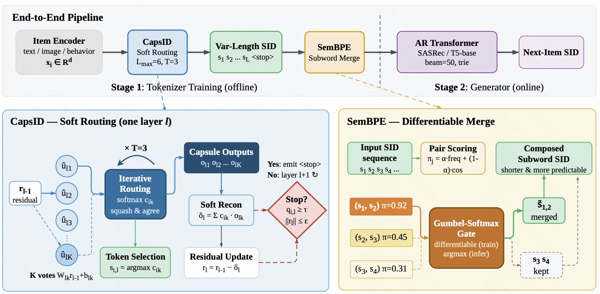
图 2 是整篇论文最关键的流程图，可以分成上下两部分。
上半部分是端到端 pipeline。首先，item encoder 把文本、图像、行为等特征编码成 $x_i$。然后进入 CAPSID tokenizer，CAPSID 使用 soft routing 得到一个变长 SID：
接着 SEMANTICBPE 对相邻 token 做 subword merge，把可复用的 token 片段合并成更短、更稳定的子词 SID。最后，自回归 Transformer 根据用户历史生成 next-item SID。推理时 beam size 为 50，并通过 trie 过滤非法路径。
图中用虚线把流程分成两个阶段：
- Stage 1: Tokenizer Training (offline)：离线训练 CAPSID 和 SEMANTICBPE，生成 item SID。
- Stage 2: Generator (online)：在线或推荐服务侧使用自回归模型生成下一个 item 的 SID。
下半部分左侧放大了 CAPSID 的单层 soft routing。当前残差 $r_{\ell-1}$ 会被送入 $K$ 个 capsule，每个 capsule 产生一个 vote。之后通过 $T=3$ 轮 iterative routing 计算路由权重 $c_{ik}$。最终 token 仍然由最大权重的 capsule 决定：
但是 residual update 不再只减掉 winner capsule，而是减掉所有 capsule 的加权重构：
这就是 CAPSID 与硬量化最本质的区别：对外仍然输出离散 token，对内保留多个语义方向参与重构。
右下角是 SEMANTICBPE。它会给相邻 token pair 打分，例如 $(s_1, s_2)$ 的 merge score 为 0.92，就倾向于合并；$(s_3, s_4)$ 分数低，就保留原样。训练时使用 Gumbel-Softmax gate 保持可微，推理时用 argmax 做硬合并。
6. CAPSID 核心一：soft residual routing
6.1 capsule vote
在第 $\ell$ 层，CAPSID 维护 $K_\ell$ 个 semantic capsules。第 $k$ 个 capsule 有自己的 pose transform：
给定上一层残差 $r_{i,\ell-1}$，每个 capsule 产生一个 vote：
直观理解：每个 capsule 都在回答一个问题：如果这个 item 的残差由我来解释，我会给出什么语义方向？
6.2 iterative routing
CAPSID 初始化 agreement logits：
然后进行 $T$ 轮 routing：
这里的逻辑是：如果某个 capsule 的 vote 和当前聚合输出 $o_{i,\ell}^{(t)}$ 更一致，它的 agreement logit 就增加，下一轮 softmax 权重更高。多轮之后，能解释当前 residual 的 capsule 权重会上升，不能解释的 capsule 权重会下降。
这比一次 softmax 更强，因为它有一个自我校正过程：第一轮先粗略分配，后续轮次根据 vote 和整体输出的一致性修正分配。
6.3 token 选择与置信度
完成 $T$ 轮 routing 后，CAPSID 仍然输出一个离散 token：
同时计算该层置信度：
这个置信度结合了两件事：
- 最大 capsule 的 routing weight 是否足够高；
- 聚合 capsule output 的模长是否足够强。
因此 $q_{i,\ell}$ 不是单纯的 softmax 最大值，而是 “模型是否明确知道这一层该选什么语义 capsule” 的综合信号。
6.4 soft residual update
硬残差量化的更新方式是：
也就是只减掉 winner code。CAPSID 改成：
这里 $o_{i,\ell k}$ 是每个 capsule 的输出，$c_{i,\ell k}^{(T)}$ 是最终路由权重。也就是说，残差更新时会保留 secondary capsules 的贡献。
用论文里的例子理解，一个 “travel cooking kit” 可能同时激活：
最终离散 token 也许仍然是 travel，因为它权重最大。但 residual update 会同时减掉 travel、cooking、outdoor 三个方向的加权重构。这样下一层看到的 residual 更接近 “尚未解释的信息”，而不是被硬切分后的错误残差。
这就是 CAPSID 最关键的直觉：对外离散，对内软解释；token 是 winner，但 residual 不是 winner-only。
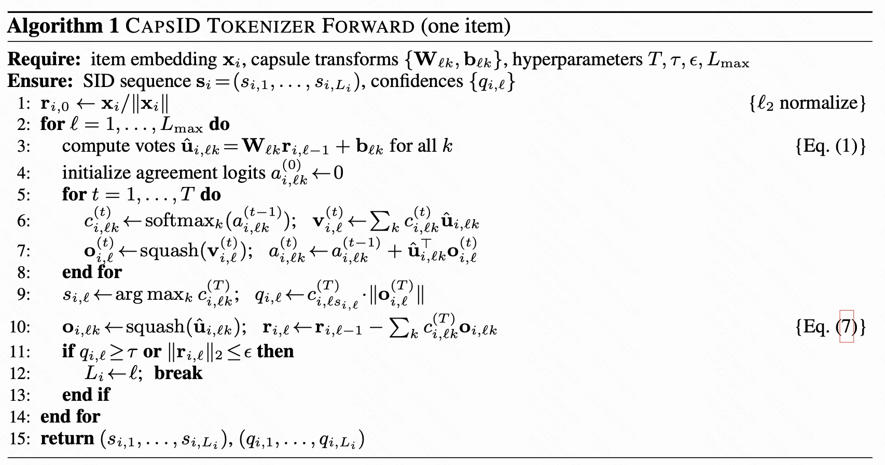
图 3 是 CAPSID tokenizer 的前向算法。逐行理解如下：
- 第 1 行先把 item embedding 做 $\ell_2$ normalize，避免高范数 item 在 agreement score 中天然占优。
- 第 2 行到第 14 行表示最多走 $L_{\max}$ 层，也就是 SID 最长不超过 $L_{\max}$。
- 第 3 行计算每个 capsule 的 vote $\hat{u}_{i,\ell k}$。
- 第 4 行初始化 agreement logits。
- 第 5 到第 8 行执行 $T$ 轮 routing：softmax 得到权重，权重加权得到 $v$，经过 squash 得到输出，再用 vote 与输出的内积更新 agreement。
- 第 9 行选出 argmax token，同时计算置信度 $q_{i,\ell}$。
- 第 10 行执行 soft residual update，这是区别于硬量化的核心。
- 第 11 到第 12 行判断是否停止：如果置信度足够高，或者残差范数已经足够小，就结束 SID。
这张算法图说明了一个非常重要的设计边界：CAPSID 的 soft routing 发生在 tokenizer 内部，最终返回的仍是普通离散 SID 和 confidence，因此推理系统仍然能沿用生成式推荐常见的 trie-constrained decoding。
7. CAPSID 核心二：confidence-driven variable length
固定长度 SID 会把所有 item 视为同等复杂。简单商品可能只需要两个 token，但固定长度会强迫它继续生成后续 token，产生噪声；复杂商品可能需要更多 token，但固定长度太短又会欠编码。
CAPSID 使用置信度驱动的变长机制：
三种停止规则分别对应：
- confidence stop：当前 winner capsule 已经足够确定，继续编码收益不大。
- residual stop：残差信息已经很小，item 语义基本解释完。
- hard cap：达到最大长度 $L_{\max}$，防止无限增长。
这使得 CAPSID 可以给不同 item 分配不同 token 预算：
- 语义清晰、属性单一的 item 可以早停；
- 多属性、边界模糊、长尾 item 可以走更深层；
- 极少数难解释 item 最多走到 $L_{\max}$。
论文强调，变长不是为了让 SID 任意变长，而是为了避免固定长度的两个极端：短了欠编码，长了过编码。
8. SEMANTICBPE：把相邻 SID token 合并成语义子词
CAPSID 生成变长 SID 后，论文继续提出 SEMANTICBPE。它借鉴 NLP 中的 BPE 思想：如果两个 token 经常一起出现，可以合并成一个 subword。但推荐场景不能只看频率，因为高频组合可能只是热门 token 共现，不一定语义上真的应该合并。
因此 SEMANTICBPE 的 pair score 同时考虑频率和语义相似度：
其中：
- $\widehat{\mathrm{freq}}$ 表示归一化后的共现频率；
- $\cos(e_{s_j}, e_{s_{j+1}})$ 表示两个 token embedding 的语义相似度；
- $\alpha$ 控制频率和语义的权重，默认是 0.6。
SEMANTICBPE 还有两个保守约束：
- pair 至少出现 $n_{\min}=20$ 次；
- 语义相似度要超过阈值 $\theta$，并且 $\theta$ 从 0.90 逐渐 anneal 到 0.55。
这可以避免推荐场景中常见的 BPE 失败模式：热门但宽泛的 token pair 因为频率高而被过度合并，进一步加剧流行度偏差。
直观例子：
[运动] [鞋]如果频繁共现且 embedding 相似，可以合并成[运动鞋]；[热销] [泛化类别]即使频繁共现，如果语义兼容性低，也不应该轻易合并。
SEMANTICBPE 的作用不是重新分配 item-to-SID，而是在已有 SID 上做轻量 composition，让生成模型面对更短、更可复用、更容易预测的 token 序列。
9. 训练目标与推理方式
论文采用两阶段训练。
Stage 1：Tokenizer pretraining
这一阶段只训练 tokenizer 相关组件，包括 item projection、capsule transforms、SEMANTICBPE merge MLP。主要损失包括 reconstruction、routing、spread、length 和 BPE warm-up。此时不训练 sequence generator。
Stage 2：Generator adaptation
这一阶段冻结 capsule centers 和 SEMANTICBPE merge MLP，然后训练自回归生成模型，同时允许低秩 routing adapters 和 BPE gate 的 scalar bias 做轻量适配。最终目标函数为：
其中：
- $\mathcal{L}_{NTP}$ 是 next-token prediction cross entropy；
- $\mathcal{L}_{route}$ 保证 routed reconstruction 能重构 item embedding；
- $\mathcal{L}_{spread}$ 防止 capsules 塌缩到少数 code；
- $\mathcal{L}_{len}$ 惩罚过长 SID；
- $\mathcal{L}_{BPE}$ 约束 subword merge。
为什么不完全端到端联合训练？因为 tokenizer 一直变化时，generator 的预测目标也一直变化，训练会不稳定。论文采用 “先学习稳定 code geometry，再让 generator 适配它” 的策略，避免生成模型追着移动靶训练。
推理时，系统仍然只生成离散 SID。所有合法 item SID 构建成 trie，beam search 每一步只能选择合法 next token。对于变长 SID，合法 item path 上有 end-of-item token，因此短 SID 不会与长 SID 前缀混淆。
10. 实验设置
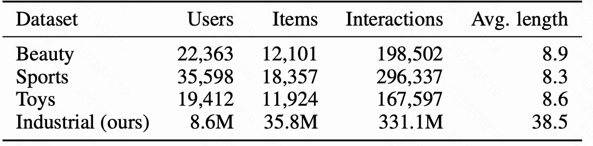
图 4 是数据集统计。公共数据集使用 Amazon Beauty、Sports、Toys，都是生成式推荐常用的 5-core leave-one-out 设置：
- Beauty：22,363 用户，12,101 item，198,502 交互，平均序列长度 8.9。
- Sports：35,598 用户，18,357 item，296,337 交互，平均序列长度 8.3。
- Toys：19,412 用户，11,924 item，167,597 交互，平均序列长度 8.6。
- Industrial：8.6M 用户，35.8M item，331.1M 交互，平均序列长度 38.5。
公共数据集用 Recall@5、Recall@10、NDCG@5、NDCG@10；工业数据集 item 数达到 35M，因此使用 Recall@50、Recall@100 和 NDCG@100。论文还特别报告 tokenizer 质量指标，例如 collision rate、code utilization、Gini、intra-code similarity、CodeRecall@50、平均 SID 长度和推理成本。
11. 主结果：CAPSID+SEMANTICBPE 在三个公共数据集都最强
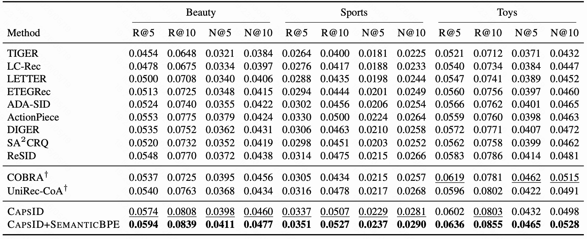
图 5 是 Beauty、Sports、Toys 上的主实验结果。表中分为三组：
- hard-SID tokenizer baseline：TIGER、LC-Rec、LETTER、ETEGRec、ADA-SID、ActionPiece、DIGER、SA2CRQ、ReSID。
- patch-route 方法：COBRA 和 UniRec-CoA，标了 $\dagger$，表示推理时额外使用 dense 或 attribute 信息。
- 本文方法：CAPSID 和 CAPSID+SEMANTICBPE。
先看单一离散表示方法。ReSID 是最强 single-representation baseline，它在 Beauty/Sports/Toys 的 R@10 分别是 0.0770、0.0475、0.0786。CAPSID 不加 SEMANTICBPE 时已经提升到 0.0808、0.0507、0.0803。加入 SEMANTICBPE 后进一步到 0.0839、0.0527、0.0855。
相对 ReSID，CAPSID+SEMANTICBPE 的 R@10 提升为：
- Beauty：从 0.0770 到 0.0839，约 +8.9%。
- Sports：从 0.0475 到 0.0527，约 +11.0%。
- Toys：从 0.0786 到 0.0855，约 +8.8%。
再看与 patch-route 方法比较。COBRA 在 Toys 上 NDCG 表现很强，因为 dense vector 能补充 sparse SID 的信息；但 CAPSID+SEMANTICBPE 在三个数据集的 R@10 和 N@10 都达到最好或并列最强。论文想证明的是：如果 SID tokenizer 本身足够好，就不一定需要额外 dense path。
12. dense patch 是否还必要？
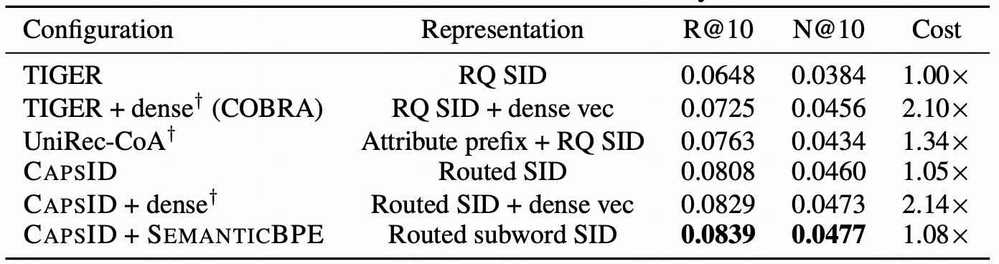
图 6 是 Beauty 上的部署成本比较，推理 cost 以 TIGER beam search 为 1.00x。
TIGER 的 R@10 是 0.0648，cost 是 1.00x。给 TIGER 加 dense vector，也就是 COBRA 风格，R@10 提升到 0.0725，但 cost 变成 2.10x。这说明硬 SID 确实丢了很多信息，dense patch 可以补回来。
但当 tokenizer 换成 CAPSID 后，情况变了。CAPSID 本身 R@10 已经到 0.0808，cost 只有 1.05x。再给 CAPSID 加 dense vector，R@10 只从 0.0808 提升到 0.0829，提升约 2.6%，但 cost 涨到 2.14x。dense path 的边际收益明显下降。
CAPSID+SEMANTICBPE 的结果最关键：R@10 是 0.0839，N@10 是 0.0477，cost 只有 1.08x。它比 CAPSID+dense 准确率还高，推理成本却接近单 SID 系统。
这张表支撑了论文的中心论断：dense patch 的有效性来自 SID 信息不足；当 tokenizer 变强，dense patch 不再是最划算的补救方式。
13. 变长 SID 是否真的有用？
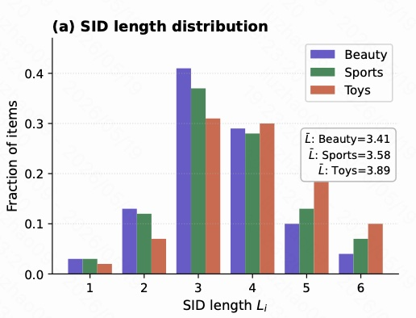
图 7 展示 Beauty、Sports、Toys 的 SID 长度分布。三组数据的众数都在 $L=3$，平均长度分别是：
- Beauty：$\bar{L}=3.41$
- Sports：$\bar{L}=3.58$
- Toys：$\bar{L}=3.89$
Toys 的平均长度最高，说明它的 item 语义空间更复杂，更多商品需要更长 SID 才能解释清楚。Beauty 平均长度最低，说明它的商品描述更容易用较短 token 表达。
这张图有两个重点：
- CAPSID 不是让所有 item 都用满 $L_{\max}=6$，绝大多数 item 都停在 3 或 4。
- 右尾仍然存在，说明复杂 item 有机会得到更长编码，而不是被固定长度压缩。
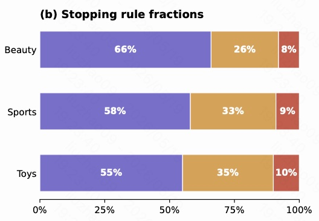
图 8 展示三种停止规则的触发比例。紫色是 confidence stop，黄色是 residual stop，红色是 hard cap。
在 Beauty 上，66% 的 item 因 confidence 达标而停止，26% 因 residual norm 足够小而停止，只有 8% 命中 hard cap。Sports 和 Toys 也类似，hard cap 只占 9% 和 10%。
这说明 CAPSID 的变长不是由最大长度硬截断主导，而是由模型学到的置信度和残差信号主导。换句话说，大部分 item 是 “模型知道已经解释够了” 才停，而不是 “没办法，只能到上限了”。
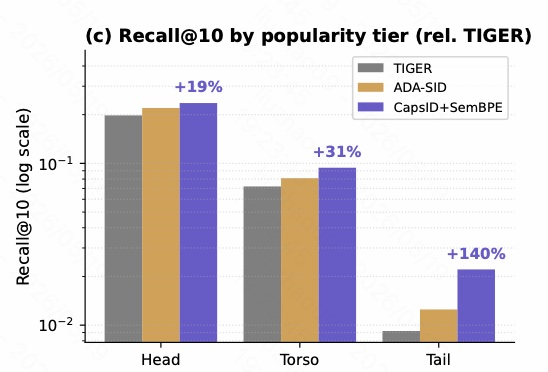
图 9 按 popularity tier 分析 Beauty 上的 Recall@10。相对 TIGER，CAPSID+SEMANTICBPE 的提升呈现明显的长尾优势：
- Head item：+19%
- Torso item：+31%
- Tail item：+140%
这和方法直觉高度一致。头部 item 交互多，协同信号强，即使用硬 SID 也有一定学习空间；尾部 item 交互少，更依赖内容语义和 tokenizer 的泛化能力。CAPSID 的 soft routing 能让边界 item 同时保留多个语义面，因此对尾部 item 提升最大。
14. 消融实验：最关键的是 soft residual update
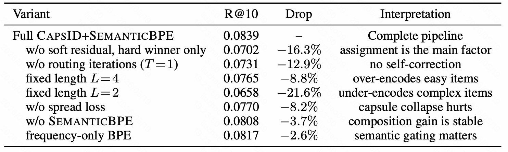
图 10 是 Beauty 上的消融实验。完整 CAPSID+SEMANTICBPE 的 R@10 是 0.0839。
最严重的退化来自 w/o soft residual, hard winner only：R@10 降到 0.0702，下降 16.3%。这说明文章真正的核心不是换了个 codebook 或加了训练技巧，而是 residual update 从 winner-only 改成 soft reconstruction。
第二个关键消融是 w/o routing iterations (T=1)：R@10 降到 0.0731，下降 12.9%。这说明多轮 agreement 不是装饰，单次 softmax 无法充分完成自我校正。
固定长度也会明显损伤效果：
- fixed length $L=4$：R@10 为 0.0765，下降 8.8%，说明会过度编码简单 item；
- fixed length $L=2$：R@10 为 0.0658，下降 21.6%，说明会严重欠编码复杂 item。
去掉 spread loss 后 R@10 为 0.0770，下降 8.2%，说明如果不约束 capsule 分散使用，codebook 可能塌缩。
去掉 SEMANTICBPE 后 R@10 为 0.0808，下降 3.7%；只用 frequency-only BPE 后 R@10 为 0.0817，下降 2.6%。这说明 SEMANTICBPE 的增益虽然小于 soft routing，但稳定存在，而且语义相似度项确实有用。
这张表可以总结为：CAPSID 的主收益来自 soft residual routing，其次是 routing iteration 和变长机制，SEMANTICBPE 提供额外的序列压缩与可预测性增益。
15. tokenizer 诊断：不只看 Recall，还看 SID 几何质量
论文比较强调一点：tokenizer 不能只看最终推荐指标，还要看它生成的 SID 是否真的更健康。因此作者给出 collision、purity、predictability、routing convergence 和 cost frontier 等诊断图。
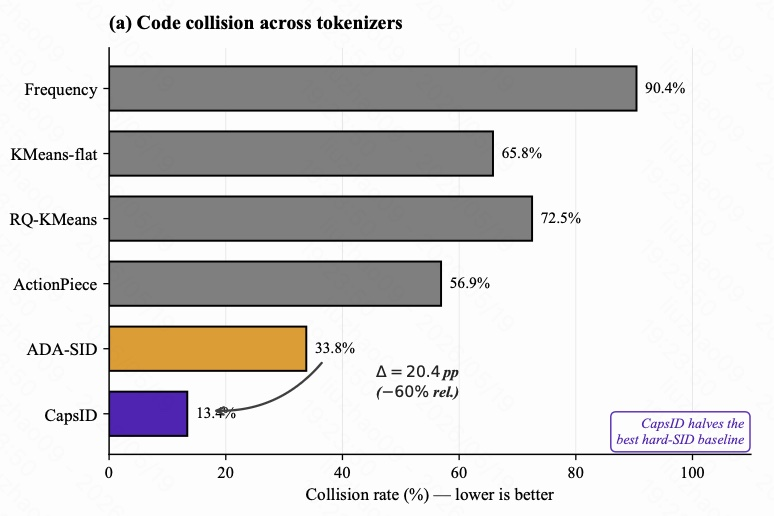
图 11 是不同 tokenizer 的 collision rate，越低越好。Frequency tokenization 的 collision 高达 90.4%，说明大量 item 共享同样 token；KMeans-flat 是 65.8%，RQ-KMeans 是 72.5%，ActionPiece 是 56.9%。ADA-SID 已经降到 33.8%，但 CAPSID 进一步降到 13.4%。
从 ADA-SID 到 CAPSID，collision rate 下降 20.4 个百分点，相对下降约 60%。这说明 CAPSID 的变长和软路由并没有制造更多混淆，反而显著减少了 item 被挤到同一 SID 的概率。
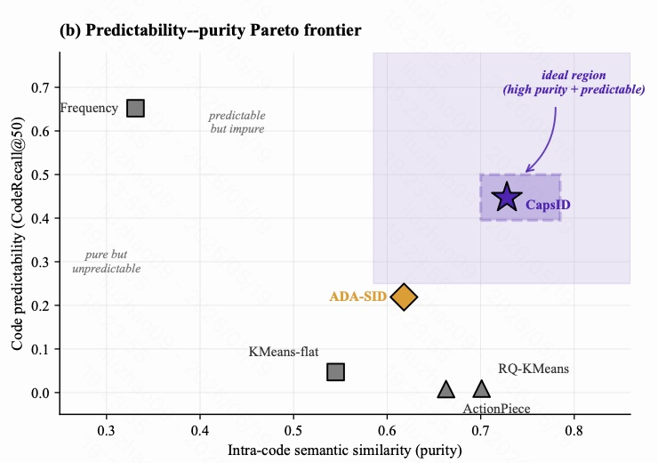
图 12 是 predictability-purity Pareto frontier。横轴是 intra-code semantic similarity，也就是同一个 code 下 item 的语义纯度；纵轴是 CodeRecall@50，也就是第一个 SID token 是否容易被生成模型预测。
不同 tokenizer 的问题不一样：
- Frequency 位于左上：容易预测，但语义不纯，因为频率 token 很泛。
- RQ-KMeans / ActionPiece 位于右下：语义相对纯，但很难预测。
- ADA-SID 居中：比硬方法更平衡，但仍不在理想区域。
- CAPSID 位于右上：同时做到高 purity 和高 predictability。
这张图说明 CAPSID 没有简单地牺牲预测性换取语义纯度，也不是只学热门 token 换取可预测性，而是在两者之间取得了更好的 Pareto 位置。
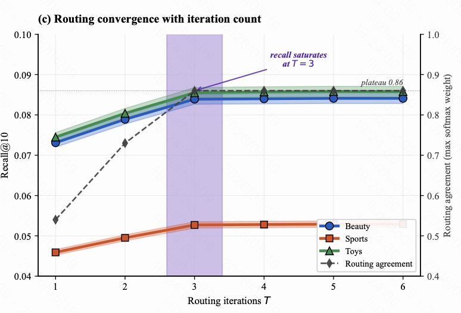
图 13 展示 routing iterations $T$ 的影响。横轴是 routing 轮数，左轴是 Recall@10，右轴是 routing agreement，即最大 softmax weight。
从 $T=1$ 到 $T=3$，Beauty、Sports、Toys 的 Recall 都明显上升；到 $T=3$ 后基本饱和。routing agreement 也从较低值逐步升到约 0.86 并进入平台期。
这解释了为什么默认取 $T=3$：它已经能完成大部分 agreement 修正，继续增加到 $T=4,5,6$ 收益很小，只会增加 tokenizer 训练成本。
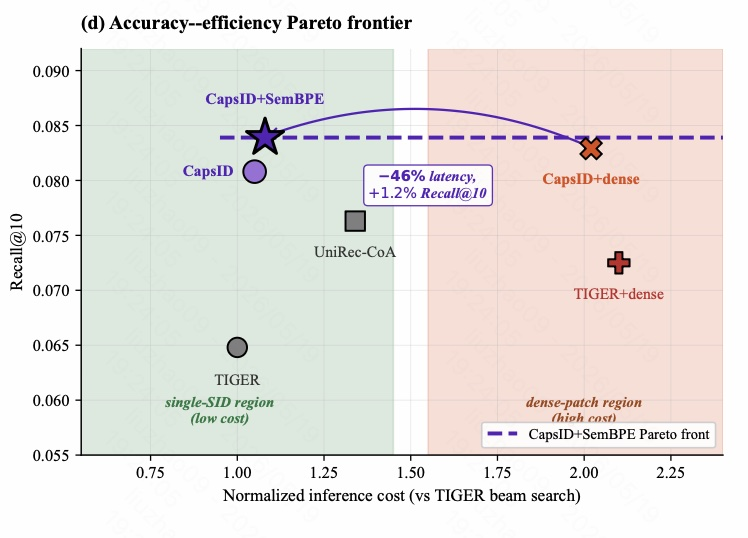
图 14 是 accuracy-efficiency Pareto frontier。横轴是相对 TIGER beam search 的归一化推理成本，纵轴是 Recall@10。
左侧绿色区域是 single-SID low-cost region，右侧红色区域是 dense-patch high-cost region。TIGER 成本低但效果弱；TIGER+dense 效果提升但成本超过 2x；CAPSID 位于低成本区域且 Recall 明显更高；CAPSID+dense 虽然也强，但成本进入 dense-patch 区域。
最重要的是 CAPSID+SEMANTICBPE：它在接近单 SID 成本的位置达到最高 Recall。图中标注显示，相比 CAPSID+dense，它减少约 46% latency，同时 Recall@10 还高 1.2%。因此它构成了更优的 accuracy-cost frontier。
16. 工业 35M item 数据集：大规模下仍然有效
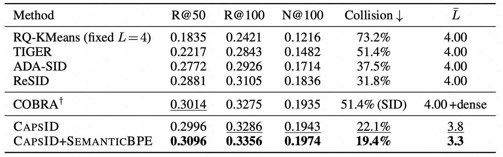
图 15 是 35M item 工业数据集上的结果。由于 item 库巨大，论文报告 R@50、R@100 和 N@100。
几个关键结果：
- RQ-KMeans fixed $L=4$ 的 collision rate 是 73.2%，说明大规模目录下硬量化碰撞非常严重。
- TIGER 的 collision rate 是 51.4%，R@100 为 0.2843。
- ADA-SID 和 ReSID 降低 collision 到 37.5% 和 31.8%，R@100 分别是 0.2926 和 0.3105。
- COBRA 依靠 dense path 达到 R@100=0.3275、N@100=0.1935，但 SID 本身 collision 仍是 51.4%，并且需要 dense 通道。
- CAPSID 不加 SEMANTICBPE 时，R@100=0.3286，N@100=0.1943，已经略高于 COBRA，同时 collision 降到 22.1%，平均 SID 长度是 3.8。
- CAPSID+SEMANTICBPE 最强，R@50=0.3096，R@100=0.3356，N@100=0.1974，collision 进一步降到 19.4%，平均长度降到 3.3。
这张表说明 CAPSID 的收益不是只在小数据集上成立。到了 35.8M item 的工业目录，collision 和推理成本会更关键，而 CAPSID+SEMANTICBPE 同时降低 collision、缩短 SID、超过 dense-patch 系统。
论文还报告：在同一 ANN 基础设施上，CAPSID+SEMANTICBPE 的端到端推理延迟是 COBRA 的 51%，同时保留 102% 的 COBRA Recall@100。也就是说，它不是用更高成本换准确率，而是在更低成本下超过了 patch-route 方法。
17. 理论分析的直觉
论文给了三个 proposition，这里不展开完整证明，只讲它们和方法设计的关系。
Proposition 1：soft routing reconstruction 与 hard reconstruction 足够接近。
软路由会减掉多个 capsule 的加权输出，看起来可能偏离硬量化的离散 code。作者证明，当 per-capsule output 和 codebook center 足够接近、winner capsule 权重足够高时，soft reconstruction 和 hard reconstruction 的差距有上界：
直观说，如果 winner 权重接近 1，软路由不会偏离硬表示太远；但它仍能把 secondary capsules 的信息用于 residual update。
Proposition 2：变长 SID 的期望长度有上界。
如果每一层至少有一个正的停止概率 $g$，那么：
这说明 confidence stop、residual stop 和 hard cap 共同保证 SID 不会无限变长。实验中平均长度在 3.41 到 3.89 之间，也支持这个结论。
Proposition 3：routing 类似 capsule EM 的 E-step。
作者把 residual 看成一个 isotropic Gaussian mixture，routing weight 可以理解为 posterior responsibility。多轮 routing 就像在同一层 capsule mixture 上迭代提高 agreement。这解释了图 13 中 $T=3$ 后趋于收敛的现象。
18. 这篇文章的关键贡献
我认为这篇文章的贡献可以归纳为五点。
第一，把生成式推荐的瓶颈明确定位到 tokenizer assignment operator。文章不是泛泛地说 SID 重要，而是指出 hard nearest-neighbor assignment 会压扁边界 item 的多面语义，并把早期错误传给后续层。
第二，提出 CAPSID，用 soft residual routing 代替 hard residual quantization。最终 token 仍是离散 argmax，但残差更新使用多个 capsule 的加权重构，这让 item 内部可以同时保留多个语义面。
第三，用 iterative agreement 做自我校正。routing 不是一次 softmax，而是多轮 vote-agreement 更新。消融中 $T=1$ 明显下降，说明这个机制确实贡献了效果。
第四，用 confidence-driven variable length 让不同 item 使用不同编码长度。简单 item 早停，复杂 item 深编码，避免固定长度下的欠编码和过编码。
第五，提出 SEMANTICBPE，在 SID 序列上做语义感知子词合并。它不是频率-only BPE，而是频率与 embedding compatibility 联合打分，因此更适合推荐场景。
19. 局限性
CAPSID 也不是没有成本。
首先，capsule routing 会增加 tokenizer 训练成本。论文报告相对 RQ-KMeans，训练成本大约增加 20% 到 30%。虽然推理仍接近标准 beam search，但离线 tokenizer 训练更复杂。
其次，CAPSID 目前假设最大深度 $L_{\max}$ 和每层 capsule 数固定。对于持续增长的动态商品库，可能需要 capsule expansion 或周期性刷新。
第三，理论分析中的 EM 解释基于 isotropic Gaussian mixture 假设。如果要扩展到更复杂的 anisotropic capsule covariance，还需要进一步理论分析。
第四，和其他推荐系统一样，CAPSID 也可能放大流行度偏差。SEMANTICBPE 虽然用语义阈值抑制热门泛化 pair 的过度合并，但真实部署仍需要公平性采样、曝光校准和 head/tail 监控。
20. 总结
这篇文章最核心的直觉是：生成式推荐不是只要一个强 Transformer 就够了，item 被编码成什么样的 SID 决定了模型能学到什么目标。
传统 RQ-VAE 式硬量化像是在每层都强迫 item 只选一个语义桶。对于多属性、边界模糊或长尾 item，这种 winner-take-all 会丢失重要语义，并把早期错误传给后续 token。CAPSID 的改法是：最终输出仍然是离散 token，但内部 residual update 允许多个 semantic capsule 共同解释 item。这样既保留了生成式推荐所需的离散接口，又减少了硬量化的信息损失。
SEMANTICBPE 则进一步把稳定共现且语义兼容的 token pair 合并成 subword，让生成模型面对更短、更可预测的 SID 序列。
所以，CAPSID+SEMANTICBPE 的完整价值可以总结为：
它把生成式推荐中的 item tokenizer 从“硬分配、固定长度、容易碰撞”的 SID 生成方式，升级成了“软路由、多轮自校正、置信度变长、语义子词压缩”的 SID 生成方式；在保持纯离散生成接口的同时，接近甚至超过 dense-patch 系统，并显著降低推理成本。